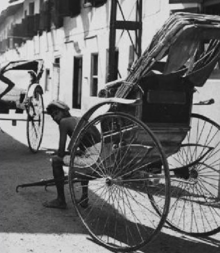

称人力车，约1870年创制。

轿子，是一种靠人抬着行走的交通工具，
曾在东西方各国广泛流行。
就其结构而言，轿
子是安装在两根杠上可移动
的床、座椅、坐蔸或睡椅，有
篷也可无篷。轿子最早
是由车演化而来。
| 百年前的交通方式 | 变迁后的交通方式 | ||
|  | 黄包车是一种人力拖拉的双轮客运工具，黄包车前身叫“东洋车”，又
称人力车，约1870年创制。 |
|
我国的第一辆汽车于1929年5月在沈阳问世，由张学良将军的辽宁迫击炮厂制造。 |
|
飞机指具有机翼、一具或多具发动机的靠自身动力驱动前进，能在大气中自身的密度大于空气的航空器。如果飞行器的密度小于空气，那它就是气球或飞艇。如果没有动力装置，只能在空中滑翔，则被称为滑翔机。飞行器的机翼如果不固定，靠机翼旋转产生升力，就是直升机或旋翼机 。固定翼飞机是最常见的航空器型态。动力的来源包含活塞发动机、涡轮螺旋桨发动机、涡轮风扇发动机或火箭发动机等等 | ||